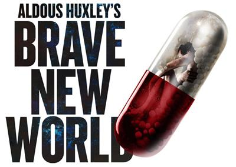
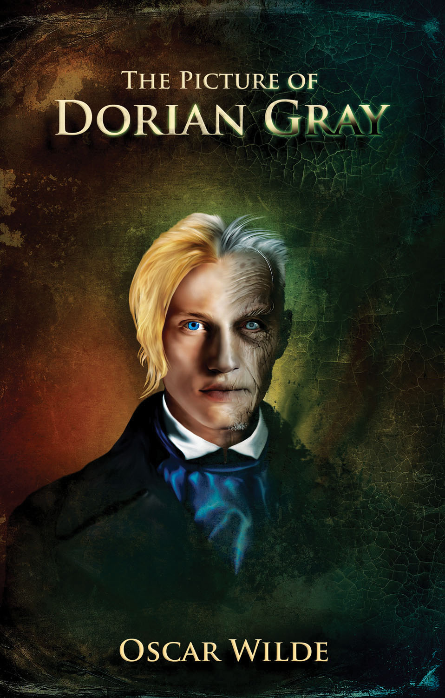

Favorite Books
Aldous Huxley

George Orwell

Oscar Wilde
My name is Michael Austin. I study software engineering and have a bachelor's degree in psychology and minor in chemistry. Over the years, I've worked in human and veterinary medicine; most recently as a veterinary technician at the Humane Society of Naples. My primary interests are in cyber security, machine learning, and the uses of computer science in space travel and colonization. I started coding in 2013 after exploring Codecademy and EdX massive-open online courses. I plan on building my own cyber-security company; focusing on increasing privacy protections for individuals, preventing corporate espionage, and shutting-down online terrorist recruitment websites. My past experiences are detailed below, including my Eagle Scout Project and an undergraduate pre-medical course I designed and implemented at Stetson University. These projects, and the logistics necessary to bring them to fruition, are the reason for my belief in making opportunities when my field of choices is stark.
My Eagle Project involved teaching 30 students at an alternative school first-aid and CPR, with support from student instructors and the American Red Cross. I fundraised and collected medical supplies from medical offices around Naples to provide these students with the materials to create their own first-aid kits. Topics in this course included: Burn treatment, poisoning response, CPR fundamentals, gun and puncture wound first-aid, and stroke recognition and first-response. I collaborated with Red Cross instructors to tailor this course to the needs of the school and students. At completion, I handed-off the curriculum to the school for future generations. It eventually developed into a life-guard program and prerequisites for EMT training.
Project Pre-Med was designed as a five section program that gave pre-medical students the opportunity to practice medical procedures on dummies handmade from recyclable materials. Medical sections include: Open and closed surgery, emergency medicine, sexual health, and sports medicine (including physical therapy). Health professionals from the public and private sector were brought together to bring students this program free of charge. These included licensed physical therapists, a general surgeon, a gastroenterologist, director of continuing education for nurses at the Deland Hospital, and a professor of sexual health. As the director of this program, I developed the curriculum in conjunction with health care professionals, organized the events, conducted training exercises, acquired materials, and supervised advertising efforts.
| Subject | Sub-focus |
|---|---|
| Crypto-currency | Bitcoin used in voting Banking in rural regions |
| Cloud Computing | Cloud Server Security |
| Machine Learning | General Artificial Intelligence Economic Singularity Resulting from AI Automation |
| Encryption | 256-bit |